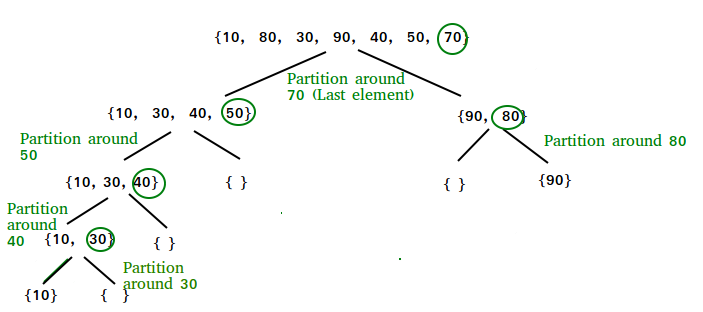
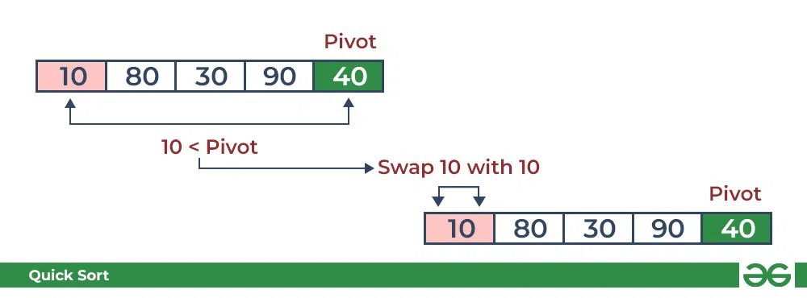
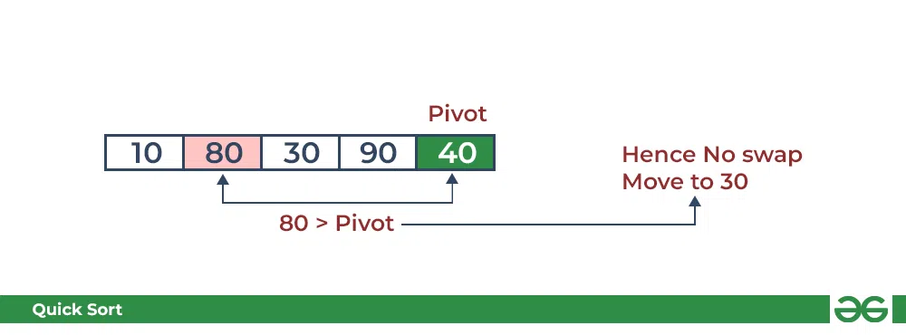
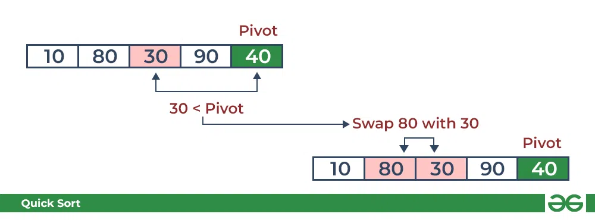
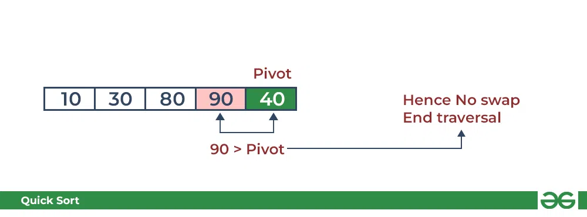
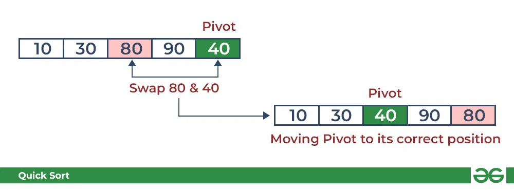
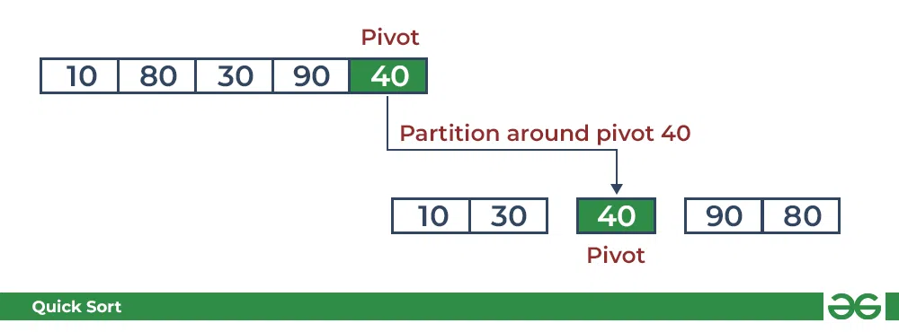
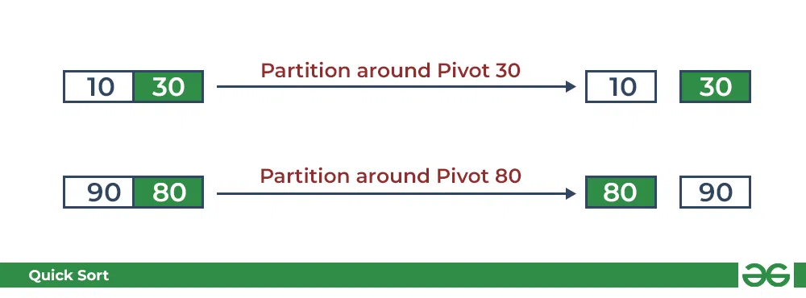

Quick Sort
QuickSort is a sorting algorithm based on the Divide and Conquer algorithm that picks an element as a pivot and partitions the given array around the picked pivot by placing the pivot in its correct position in the sorted array.
How does Quick Sort work?
The key process in quickSort is a partition(). The target of partitions is to place the pivot (any element can be chosen to be a pivot) at its correct position in the sorted array and put all smaller elements to the left of the pivot, and all greater elements to the right of the pivot.
Partition is done recursively on each side of the pivot after the pivot is placed in its correct position and this finally sorts the array.

Choice of Pivot:
There are many different choices for picking pivots.
- Always pick the first element as a pivot.
- Always pick the last element as a pivot.
- Pick a random element as a pivot.
- Pick the middle as the pivot.
Partition Algorithm:
The logic is simple, we start from the leftmost element and keep track of the index of smaller (or equal) elements as i. While traversing, if we find a smaller element, we swap the current element with arr[i]. Otherwise, we ignore the current element.
Quick Sort Algorithm
Consider: arr[] = {10, 80, 30, 90, 40}.
- Compare 10 with the pivot and as it is less than pivot arrange it accordingly.

- Compare 80 with the pivot. It is greater than pivot.

- Compare 30 with pivot. It is less than pivot so arrange it accordingly.

- Compare 90 with the pivot. It is greater than the pivot.

- Arrange the pivot in its correct position.

Illustration of Quicksort
As the partition process is done recursively, it keeps on putting the pivot in its actual position in the sorted array. Repeatedly putting pivots in their actual position makes the array sorted.
Follow the below images to understand how the recursive implementation of the partition algorithm helps to sort the array.
- Initial partition on the main array:

- Partitioning of the subarrays:

Complexity Analysis of Quick Sort
Time Complexity:
- Best Case: Ω (n log (n))
The best-case scenario for quicksort occur when the pivot chosen at the each step divides the array into roughly equal halves.
In this case, the algorithm will make balanced partitions, leading to efficient Sorting.
- Average Case: θ (n log (n))
Quicksort's average-case performance is usually very good in practice, making it one of the fastest sorting Algorithm.
- Worst Case: O(n^2)
The worst-case Scenario for Quicksort occur when the pivot at each step consistently results in highly unbalanced partitions. When the array is already sorted and the pivot is always chosen as the smallest or largest element. To mitigate the worst-case Scenario, various techniques are used such as choosing a good pivot (e.g., median of three) and using Randomized algorithm (Randomized Quicksort ) to shuffle the element before sorting.
Auxiliary Space: O(1)
If we don't consider the recursive stack space. If we consider the recursive stack space then, in the worst case quicksort could make O(n).
Advantages of Quick Sort
- It is a divide-and-conquer algorithm that makes it easier to solve problems.
- It is efficient on large data sets.
- It has a low overhead, as it only requires a small amount of memory to function.
Disadvantages of Quick Sort
- It has a worst-case time complexity of O(N2), which occurs when the pivot is chosen poorly.
- It is not a good choice for small data sets.
- It is not a stable sort, meaning that if two elements have the same key, their relative order will not be preserved in the sorted output in case of quick sort, because here we are swapping elements according to the pivot's position (without considering their original positions).